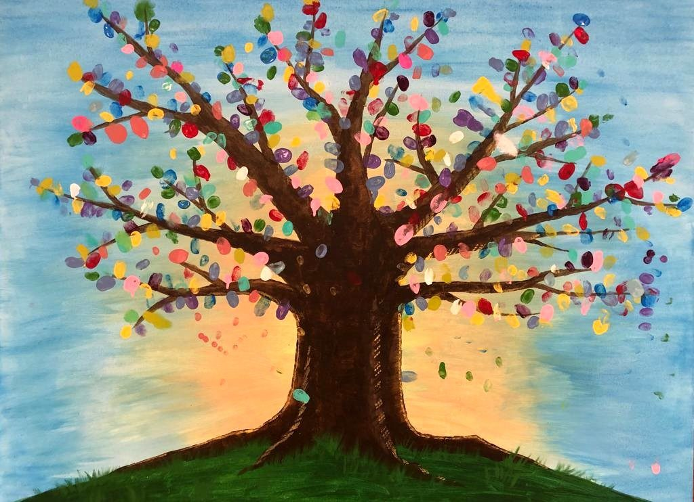

人生的意義是什麼？
我們為什麼來到這個世界？ 人生真正的價值與目的又是什麼？ 讓我們一同尋找答案。
進一步了解 →歡迎來到生命泉靈糧教會！ 無論您正在探索基督信仰， 或是尋找一個可以彼此關懷、 一同成長的教會， 我們都誠摯歡迎您的到來。

每週六 · 上午10:00至下午1:00
生命泉靈糧教會於1998年在多倫多成立， 以建立一間充滿神一切豐盛的榮耀教會 為異象。
本教會是台北靈糧堂的分堂， 也是靈糧全球使徒性網絡 （BOL Global Apostolic Network） 的一員。
深入認識我們的教會 →